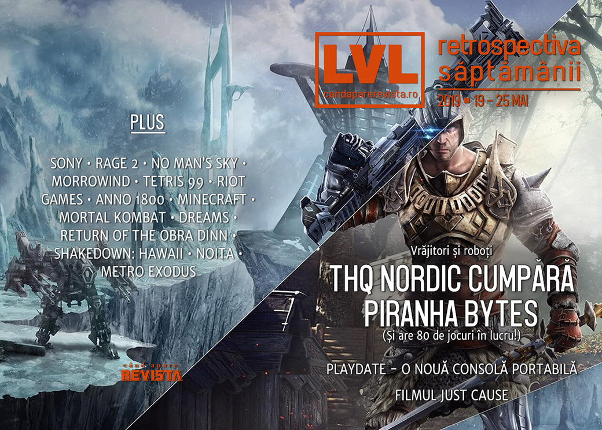

Retrospectiva săptămânii 19 - 25 mai 2019
THQ Nordic achiziționează legendarul studio Piranha Bytes, Sony își deschide un studio dedicat pentru ecranizări de jocuri, s-au lansat Total War: Three Kingdoms și Pathologic 2, în curând vom avea o consolă de buzunar cu manivelă, iar pe Steam a început curățenia de primăvară.
Linkuri rapide:

Ştiri
- Sony își face un studio dedicat - PlayStation Productions - pentru a ecraniza jocuri video pentru TV și cinema. (Destructoid, VideoGamesChronicle, Games Informer)
- Anunțul de săptămâna trecută privind parteneriatul dintre Sony și Microsoft i-a luat prin surprindere pe cei din echipa PlayStation. (Bloomberg, Ars Technica, PCGamesInsider.biz, VideoGamesChronicle)
- Apare un film Just Cause. O casă de producție din Germania a achiziționat drepturile de ecranizare și l-a angajat pe scenaristul filmelor John Wick pentru a scrie un scenariu. Filmul va apărea în 2021. (Variety, VideoGamesChronicle, Games Informer)
- Deși nu a fost anunțat încă oficial, umblă vorba în târg că și Knights Of The Old Republic va avea parte de o ecranizare. (BuzzFeed, ShackNews, US Gamer)
- S-au lansat Oculus Quest și Oculus Rift S, noile modele performante de Oculus Rift VR. (Destructoid)
- THQ Nordic cumpără celebra companie Piranha Bytes. (PC Gamer, DSOGaming , Eurogamer, RPS). În altă ordine de idei, THQ Nordic a anunțat că are 80 de jocuri în curs de dezvoltare, din care 48 încă nu au fost dezvăluite. (Games Informer, PC Gamer, Shacknews)
- O companie anunță o nouă consolă mobilă ce evocă vechile GameBoy. Compania se numește Panic și sunt cei care se ocupă de publishing pentru jocurile Firewatch și Untitled Goose Game. Iar dispozitivul mobil se numește Playdate și are și o manivelă. Și e galben. :) (Eurogamer, Destructoid, Kotaku, Shacknews, The Verge, Variety)
- Dependența de jocuri a fost recunoscută oficial ca boală de către Organizația Mondială a Sănătății. Clasificarea va intra în vigoare începând cu 1 ianuarie 2022. (VGC, Shacknews, Games Informer, Polygon, Kotaku, GamesIndustry.biz)
Articole (critică, dev, design)
- The state of singleplayer games in 2019 so far (PC Gamer)
- Fortnite is basically a giant, endless advertisement now (Polygon)
- Why devs make merchandise and what it costs them (PC Gamer)
- Games that ask: what are cities? (Eurogamer)
- Why 2019 has thus far been an underwhelming year for games (US Gamer)
- Technicolor dystopias: why the colorful wastelands of Rage 2, Far Cry New Dawn, and Fallout 76 are suddenly popular (US Gamer)
Actualitate
- Microsoft and Sony are teaming up for the future of gaming (The Verge)
- Report: Sony leads a cloud gaming market that will hit $2.5B by 2023 (GameDaily.biz)
- Why the quirky Playdate portable could succeed where Ouya failed (Ars Technica)
- Video Games Should Be Weirder (Kotaku)
- What will Playstation Productions mean for video game movies (US Gamer)
Not-a-review
- Rage 2 is Too Big for Its Own Good (Hardcore Gamer)
- Clever No Man’s Sky Players Are Trying To Add Cities To The Game (Kotaku)
- The brilliant weirdness of Morrowind’s in-game books (Eurogamer)
- Total War: Three Kingdoms finally gets diplomacy right (PC Gamer)
- Dreams becomes reality: the game that can make an artist out of anyone (The Guardian)
- ‘Tetris 99’ Is a Maelstrom of Industry Trends (Variety)
- Shakedown: Hawaii Shows Why Capitalism Sucks (Unwinnable)
- Why Valve making its own auto chess is a big deal (US Gamer)
- It’s Time to Celebrate The Witcher 3’s Yennefer as One of Gaming’s Most Complex Women (Paste)
Industrie
- Censorship, Steam, and the explosive rise of PC gaming in China (PC Gamer)
- At Riot, the walkout was just the beginning (The Verge)
- Xbox chief Phil Spencer outlines plans for fighting toxicity in gaming (The Verge) + Video games: A unifying force for the world (Microsoft Blog)
- World War Z’s Saber Interactive On Surviving Growth And Partnering With Epic Games (GameDaily.biz)
- U.S. Senator Says His Anti-Loot Box Bill Has The Video Game Industry Worried (Kotaku)
- Why Anno 1800 became the fastest-selling entry in the 21-year-old franchise (PCGamesInsider.biz)
- The accidental authenticity of Devolver Digital (GamesIndustry.biz)
- Inside Station F: The grander ambitions of Ubisoft (GamesIndustry.biz)
- $1.2bn and almost six years later: How Microsoft supports indies with ID@Xbox and Game Pass (PC Games Insider)
Istorie, retrospectivă
- Minecraft Players Are Celebrating 10 Years With Cakes, Artwork And More (Kotaku)
- Minecraft at 10: a decade of building things and changing lives (The Guardian)
- War Stories: Lucas Pope and what almost sank Return of the Obra Dinn (Ars Technica)
- After Nearly 40 Years, Video Games Still Don't Do Lord Of The Rings Justice (Kotaku)
- Mortal Kombat began something special: the idea of fighting games with lore (Polygon)
- Taking A Look(ing Glass) at Thief: Deadly Shadows… 15 Years Later (Gamasutra)
Dev, making of, mecanici
- The Noita devs on how to make a fun game when everything is falling (RPS)
- Game Design Deep Dive: Re-imagining the double-jump in The Messenger (Gamasutra)
- Game Design Deep Dive: Environmental storytelling in Generation Zero (Gamasutra)
- Designing for horror and hope in A Plague Tale: Innocence (Gamasutra)
Design, world-building, artă
- Broken Landscapes (SlowRun)
- An Unfair Fight (Kotaku)
Anunţuri şi lansări de jocuri
- Human Head’s Viking RPG Rune renamed again, will be an Epic exclusive at launch (PC Gamer)
- The Next Call of Duty Is Called Modern Warfare (Yep, Really) (Kotaku)
Anunţate
- Grid, un reboot al seriei (Destructoid)
- Dota Auto-Chess (Games Informer, Destructoid)
- Tiny Metal: Full Metal Rumble (RPS)
- Baldo (Destructoid)
- Art of Rally (PC Gamer)
- MythBusters: The Game (GameReactor)
- Arma 3: Contact, un expansion cu extratereștri (Polygon)
- Blaster Master Zero vine și pe PC (Destructoid)
- Travis Strikes Again va ajunge și pe Steam și PS4 (PC Gamer)
- Pathfinder: Kingmaker va fi relansat pe 6 iunie ca Enhanced Edition, împreună cu următorul DLC, Beneath the Stolen Lands (PC Gamer)
Acum cu dată de lansare
- Outer Wilds: 30 mai (GameSpace)
- Gato Roboto: 30 mai (Destructoid)
- RAD: 20 august (VideoGamesChronicle)
- Ancestors: The Humankind Odyssey: 27 august (PC Gamer)
- Man of Medan: 30 august (PC Gamer)
Lansate
- 20 mai: Hell is Other Demons (Steam)
- 20 mai The Elder Scrolls Online: Elsweyr (Steam)
- 21 mai: Team Sonic Racing (Steam)
- 21 mai: Beat Saber (iese din early access) (Steam)
- 21 mai: American Fugitive (Steam)
- 21 mai: Dauntless (Shacknews)
- 21 mai: Observation (Epic Store)
- 22 mai: Gladiabots (iese din early access) (Steam)
- 23 mai: Battalion 1944 (iese din early access) (Steam)
- 23 mai: Total War: Three Kingdoms (Steam)
- 23 mai: Conglomerate 451 (early access) (Steam)
- 23 mai: Pathologic 2 (Steam, gog.com)
- 23 mai: Project Winter (Steam)
- 23 mai: S.W.I.N.E. HD Remaster (Steam)
- 24 mai: XERA: Survival (early access) (Steam)
- 24 mai: Steambirds Alliance Beta (Steam)
- 24 mai: Splitgate: Arena Warfare (Steam)
Prăvălii de jocuri
- Valve Was Not Sure What To Do About Positive Review Bombing (Games Informer)
- Assassin’s Creed: Unity positive review bomb leaves Valve confused (Eurogamer)
Știri
- Buying games too fast on the Epic Games Store can lock your account (PC Gamer)
- The Ouya's Store Closes Next Month (Games Informer)
- GOG Galaxy 2.0 aims to bring games from all PC and console platforms under one roof (PC Gamer), GOG’s new client aims to integrate all your games and friends across PC and consoles (Eurogamer)
Jocuri noi în catalog
- Into the Breach and FTL are now on Origin Access Basic, Tropico 6 on Premier (PC Gamer)
- Superhot, Dead By Daylight, The Banner Saga, And More Coming To Xbox Game Pass (Games Informer)
Jocuri retrase
Jocuri gratis și free weekends
- The Sims 4 is currently free on PC (Eurogamer)
- City of Brass is the next Epic Games Store freebie (PC Gamer)
Reduceri și promoții
- Classic Xbox games discounted at Microsoft in a huge Backward Compatible Sale (Polygon)
- Best PC gaming deals of the week - 24th May 2019 (RPS)
- Steam is challenging us to clear out our backlogs (Destructoid)
Retrospectiva săptămânii este rubrica duminicală în care trecem în revistă evenimentele săptămânii de pe frontul de gaming: știri şi articole (scrise de alții, bineînțeles, că e mai ușor aşa), industrie, lansări, oferte de jocuri, toate numai de savurat la cafeaua de duminică dimineața.
De asemenea, rubrica e deschisă oricui vrea și poate contribui. Dacă ai citit vreun articol sau vreo știre interesantă și crezi că merită incluse în retrospectiva săptămânii, te așteptăm pe forum pe unul dintre topicurile dedicate: Știri, Articole, Gaming România].